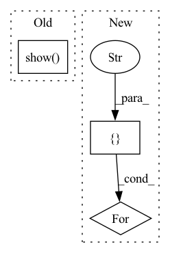

Pattern ID :164
Before Change
for name, group in logs.groupby("uid"):
group.plot.line(x="epoch", y="top_1", ax=ax)
plt.show()
fig, ax = plt.subplots()
for name, group in logs.groupby("uid"):
group.plot.line(x="relative_time", y="top_1", ax=ax)After Change
plot_all(x="epoch")
plot_all(x="relative_time")
for chungus in [ "delta", "training.lr", "training.weight_decay",
"resolution.max_res" , "resolution.min_res":
plot_all(x="relative_time", by_col=chungus)
plot_all()
In pattern: SUPERPATTERN
Frequency: 3
Non-data size: 3
Instances Fragment ID: 1574096
Project Name: libffcv/ffcv
Commit Name: 42c1f93136351919b3727e42cbf1857966d5f750
Time: 2021-11-11
Author: engstrom@csail.mit.edu
File Name: examples/imagenet_collect.py
M Class Name: AnonimousClass
N Class Name: AnonimousClass
M Method Name: main(1)
N Method Name: main(1)
M Parent Class:
N Parent Class:
M File Name: examples/imagenet_collect.py
N File Name: examples/imagenet_collect.py
M Start Line: 45
M End Line: 55
N Start Line: 46
N End Line: 84
Before Change
return fig,
_ = animation.FuncAnimation(fig, animate, frames=num_frames * 100, interval=100)
plt.show(block=True)
if __name__ == "__main__":
app.run(main)After Change
def main(unused_argv):
path_prefix = "E:\\meshgraphnets\\output\\flag_simple\\"
path_suffix = "rollout\\rollout.pkl"
rollout_paths = ["Fri-Feb-11-20-42-42-2022" ]
// path_prefix = "/home/kit/anthropomatik/sn2444/meshgraphnets/output/deforming_plate/"
// path_suffix = "rollout/rollout.pkl"
// rollout_paths = ["Mon-Jan-31-05-04-38-2022/2", "Mon-Jan-31-05-10-30-2022/2", "Mon-Jan-31-05-20-38-2022/2", "Mon-Jan-31-05-35-42-2022/2", "Mon-Jan-31-05-39-05-2022/2", "Mon-Jan-31-08-28-21-2022/2"]
for rollout_path in rollout_paths:
run_path = os.path.join(path_prefix, rollout_path)
all_subdirs = [os.path.join(run_path, d) for d in os.listdir(run_path) if
os.path.isdir(os.path.join(run_path, d))]
save_path = max(all_subdirs, key=os.path.getmtime) Fragment ID: 1574085
Project Name: wwmark/meshgraphnets
Commit Name: eed20dd8a346a7fc237279d136f08b426d5d27d4
Time: 2022-02-11
Author: ruoheng.ma@gmail.com
File Name: plot_cloth.py
M Class Name: AnonimousClass
N Class Name: AnonimousClass
M Method Name: main(1)
N Method Name: main(1)
M Parent Class:
N Parent Class:
M File Name: plot_cloth.py
N File Name: plot_cloth.py
M Start Line: 45
M End Line: 87
N Start Line: 47
N End Line: 105
Before Change
anima = animation.FuncAnimation(fig, animate, frames=num_frames * 10, interval=100)
// writervideo = animation.FFMpegWriter(fps=30)
// anima.save("ani.mp4", writer=writervideo)
plt.show(block=True)
if __name__ == "__main__":
app.run(main)After Change
def main(unused_argv):
path_prefix = "E:\\meshgraphnets\\output\\deforming_plate\\"
path_suffix = "rollout\\rollout.pkl"
rollout_paths = [ "Tue-Jan-25-17-50-18-2022\\1", "Fri-Jan-28-13-53-24-2022\\1" ]
for rollout_path in rollout_paths:
save_path = os.path.join(path_prefix, rollout_path)
data_path = os.path.join(path_prefix, rollout_path, path_suffix)
print("Ploting run", save_path)
with open(data_path, "rb") as fp: Fragment ID: 1574086
Project Name: wwmark/meshgraphnets
Commit Name: cba01dffc57412c5296a68c40c90a417fa3fc69b
Time: 2022-01-29
Author: ruoheng.ma@gmail.com
File Name: plot_deform.py
M Class Name: AnonimousClass
N Class Name: AnonimousClass
M Method Name: main(1)
N Method Name: main(1)
M Parent Class:
N Parent Class:
M File Name: plot_deform.py
N File Name: plot_deform.py
M Start Line: 33
M End Line: 126
N Start Line: 35
N End Line: 136